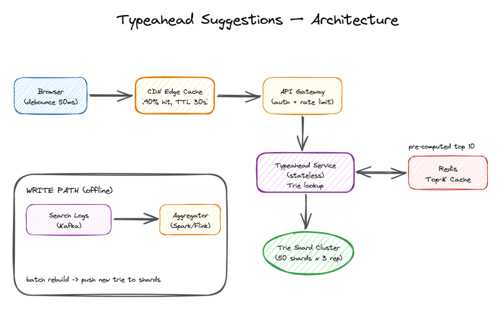

As the user types, predict the next 5 most likely completions from global search history — in single-digit milliseconds.
Build a "search-as-you-type" suggestion service: as the user types one keystroke at a time, return the top 5 most likely completions, drawn from global past searches.
b = bit (lowercase) · B = byte (uppercase) · 1 B = 8 b1 KB = 1,000 B · 1 MB = 10⁶ B · 1 GB = 10⁹ B · 1 TB = 10¹² B (decimal / SI units, the standard in capacity math)1 char = 1 B for ASCII text (UTF-8 keeps Latin letters at 1 B; emoji/CJK would be 2–4 B — we ignore for this back-of-envelope).
Daily searches = 10⁹ searches/day Seconds per day = 24 × 3600 = 86,400 s/day ≈ 10⁵ s/day Average completed-search QPS = 10⁹ / 10⁵ = 10⁴ = 10,000 QPS But each KEYSTROKE fires a request (after 100 ms debounce): Average query length = 15 characters (1 char = 1 B in UTF-8 ASCII) Requests per finished query≈ 15 / debounce ≈ 10 network calls Keystroke QPS = 10,000 × 10 = 100,000 QPS (call it ~10⁵) Peak (2× headroom) = 200,000 QPS ≈ 2 × 10⁵ QPS
Only the FINAL submitted query is recorded (not every keystroke): Write QPS = 10,000 events/sec = 10⁴ events/s Each event payload ≈ 200 B (query + userId + ts + metadata) Kafka ingress = 10⁴ × 200 B = 2 × 10⁶ B/s = 2 MB/s
Distinct queries kept = 5 × 10⁹ (5 billion unique phrases over 30 days)
Avg phrase length = 20 characters = 20 B
Raw phrase text = 5×10⁹ × 20 B = 10¹¹ B = 100 GB
Trie overhead factor ≈ 5× (child pointers 8 B each + freq counter 8 B
+ top-5 list ≈ 5 × 16 B = 80 B per node)
Trie in RAM ≈ 100 GB × 5 = 500 GB total
Per-shard RAM (50 shards) = 500 GB / 50 = 10 GB / shard
Plus 3 replicas for HA = 150 trie-server processes in total
Suggestion response size: 5 suggestions × ~30 B each = 150 B + JSON envelope, headers ≈ 850 B Total response ≈ 1 KB = 10³ B Downstream bandwidth (to users), assuming CDN absorbs 90%: Origin QPS = 200,000 × 10% = 20,000 QPS Origin BW = 20,000 × 1 KB = 20 MB/s Edge BW = 200,000 × 1 KB = 200 MB/s (served by CDN, not us)
Reads : 200,000 QPS peak · 1 KB/response · <30 ms p99 Writes : 10,000 evt/s · 200 B each · async Storage : 500 GB total · 10 GB / shard · in RAM Net out : 20 MB/s origin · 200 MB/s edge
B for byte, lowercase b for bit. Network speeds are often quoted in bits (Gbps = gigabits per second), storage in bytes (GB). Mixing them up gives 8× wrong answers in interviews.A trie (pronounced "try") is a tree where each path from the root to a node spells out a prefix. Perfect for "find words starting with X" lookups.
Example trie holding: "cat", "car", "cap", "cab", "can"
root
│
c
│
a
┌──┼──┬──┬──┐
t r p b n
● ● ● ● ● (● = end-of-word, holds frequency)
Walking "ca" lands us at the node after 'a'. To suggest, we look at all words
in the subtree below that node and pick the top 5 by frequency.
For every keystroke, we'd:
Step 2 is the killer — a popular prefix like "a" could have millions of words underneath. At 150k QPS, this is impossible in milliseconds.
The trick: at every trie node, store the top 5 completions of words passing through that node, pre-computed offline.
root
│
c
│
a top5 = ["car", "can", "cat", "cap", "cab"]
┌──┼──┬──┬──┐
t r p b n
● ● ● ● ●
Now, a query is just:
Two completely separate paths, drawn one above the other. Read path on top (hot, in-memory, must answer in ms). Write/learn path below (batch, throughput-oriented, can be slow).
══════════════════════════════════════ READ PATH (hot, < 30 ms) ══════════════════════════════════════
┌──────────┐ GET /suggest?q=cov ┌────────────────┐
│ Browser │ ─────────────────────────►│ CDN Edge Cache │
│ (debounce│ │ TTL 30–60s │
│ 100 ms) │ └───────┬────────┘
└─────▲────┘ │
│ ┌─────────┴─────────┐
│ │ │
│ HIT (90%) MISS (10%)
│ │ │
│ top-5 JSON <10ms │ ▼
│◄─────────────────────────────┘ ┌──────────────┐
│ │ API Gateway │
│ │ (auth, rate │
│ │ limit, LB) │
│ └──────┬───────┘
│ │
│ ▼
│ ┌──────────────────┐
│ │ Typeahead Service │
│ │ (stateless) │
│ └──┬────────────┬──┘
│ │ │
│ ┌─────────────────────┘ └─────────────────────┐
│ │ 4a. trie lookup │ 4b. trending lookup │
│ ▼ ▼ │
│ ┌────────────────────────┐ ┌────────────────────────┐ │
│ │ Trie Shard Cluster │ │ Redis Per-Prefix Sets │ │
│ │ 50 shards × 3 replicas │ │ ZREVRANGE trending:cov│ │
│ │ Lookup = O(prefix len) │ │ → top-5 trending NOW │ │
│ │ pre-computed top-5 │ │ TTL 2h, real-time │ │
│ └────────────┬───────────┘ └────────────┬───────────┘ │
│ │ │ │
│ └──────────────┬────────────────────┘ │
│ ▼ │
│ ┌──────────────────┐ │
│ │ MERGE + RE-RANK │ │
│ │ score = 0.7×trie│ │
│ │ + 0.3×redis│ │
│ └────────┬─────────┘ │
│ │ │
│◄─────────────────────────────────┘ top-5 JSON ~1 KB (via CDN, cached) │
│ │
┌─────┴────┐ │
│ Browser │ renders dropdown │
└──────────┘ │
▲
│ hot-swap new trie
══════════════════════════════════════ WRITE / LEARN PATH (cold + streaming) ═════════════════════════════
│
┌──────────┐ finished ┌──────────────┐ ┌──────────────────┐ ┌────────────────┴────────┐
│ Browser │ search │ Search │ │ Kafka topic │ │ Trie Builder │
│ submit │ ──────────────► │ Service │ ───► │ queries.raw │ ───► │ (Spark / Flink) │
│ "cats" │ │ (logs the │ │ 10⁴ msg/s │ │ hourly job: │
└──────────┘ │ query) │ │ retention 30d │ │ 1) aggregate 30d │
└──────────────┘ └────────┬─────────┘ │ 2) apply decay │
│ │ 3) rebuild trie │
▼ │ 4) compute top-5/node │
┌────────────────┐ │ 5) ship to shards │
│ Stream Worker │ └─────────────────────────┘
│ (Flink, real- │
│ time consumer)│ writes per-prefix sorted sets
│ │ ──────────► ┌───────────────────────┐
│ For "cats": │ │ Redis trending:c │
│ ZINCRBY each │ │ Redis trending:ca │
│ prefix of the │ │ Redis trending:cat │
│ query │ │ Redis trending:cats │
└────────────────┘ │ (each = sorted set │
│ with TTL 2h) │
└───────────────────────┘

⬇ Download Interactive Diagram (.excalidraw) ↗ Open in Excalidraw
c, then a in the search box.GET /suggest?q=ca.hash("ca") mod 50) to choose a shard, then picks a healthy replica of that shard.root → 'c' → 'a' (2 pointer hops) → returns pre-computed top-5. < 1 ms.ZREVRANGE trending:ca 0 4 → returns top-5 trending queries for this prefix (last 2h). ~0.5 ms.0.7 × trie_score + 0.3 × redis_score, returns final top-5. This surfaces trending terms AND brand-new terms not yet in the trie.stale-while-revalidate).en-US:ca). TTL 30–60 s is the sweet spot — short enough to pick up new trends, long enough for high hit rate.Cache-Control headers from the origin. For "ca", we cache the top-5 response right at the edge and never hit our backend.queries.raw topic; Flink/Spark consume it.500 GB of trie data won't fit in one server's RAM (a fat box has ~256 GB). We shard the trie across N servers.
| Strategy | How | Pros | Cons |
|---|---|---|---|
| By first letter / prefix range | 'a*' → shard 1, 'b*' → shard 2, … | Each request goes to exactly one shard; build can produce one trie per shard directly | Uneven load — "a", "s", "t" are hot; "z", "q" are cold |
| By hash(prefix) | For each typed prefix, compute its hash and mod by N | Even load across shards | Same word's prefixes scatter across many shards → harder to compute global Top-K during build |
In practice: shard by first 2 characters (~26² = 676 logical buckets), then group buckets into ~50 physical shards balancing by traffic (the hot "th*", "fa*", "yo*" buckets get their own shards; cold ones are merged). Each shard gets 3 replicas for HA and read scaling.
bucket → shard-id → list of replica addresses. Loaded from a config service (ZooKeeper / etcd / Consul) and watched for changes."ca", compute bucket = "ca" → look up shard-id = 7 → list of 3 replica addresses.How does new search data get into the trie? Lambda architecture — a slow batch path that rebuilds everything, and a fast stream path that patches recent changes.
queries.raw = the name of one specific Kafka topic we created for this system. A "topic" in Kafka is just a named, append-only log file (replicated across brokers). Every time a user submits a search like "cats videos", the Search Service appends one JSON record to this topic, e.g. {"q":"cats videos","uid":123,"ts":1716...,"locale":"en-US"}. The topic retains these records for 30 days, so any downstream consumer (batch job, stream worker, audit) can replay them.views_30d. Takes 2 hours. Result is accurate but ~24 hours stale.views_today[video-id]. Always within seconds of real-time but only covers "today".views_30d[video] + views_today[video]. You get the best of both — yesterday's accurate snapshot plus today's live delta.df.groupBy("query").count() and Spark splits it across hundreds of worker machines, each crunching a chunk of the input in parallel. Used for our hourly trie rebuild because it's great at "read a huge file, aggregate, write a result". Examples of users: Netflix, Uber, Airbnb.Stage Storage Format Retention
──────────────────────────────────────────────────────────────────────────────
Raw search events Kafka topic queries.raw JSON / Avro per msg 30 days
Long-term archive S3 / HDFS (data lake) Parquet, partitioned 2 years
s3://typeahead/raw/dt=2026-05-25/hour=14/
Aggregated counts Hive / Iceberg table Parquet columnar 90 days
schema: (query, count_30d, last_seen)
Built trie (serving) In-memory inside each custom binary format current only
trie-server process (mmapped page-aligned) (atomically
swapped)
Recent counters Redis SORTED SET key=trending:{prefix} 2 hour TTL
per-prefix → ZSET of (query,score)
trending:ca, trending:co…
So: Kafka is the buffer / source of truth for events, S3 is the long-term archive, the in-memory trie is the serving copy, and Redis is the speed-layer patch. Each storage is picked for what it's best at — Kafka for durable ordered ingest, S3 for cheap bulk reads, RAM for low-latency lookups, Redis for fast small writes.
queries.raw contains every completed search of the day (or longer — depends on retention).SELECT query, COUNT(*) FROM events WHERE ts > NOW() - 30d GROUP BY query.weight = 0.5 ^ (age_in_days / half_life_days) with a 30-day half-life.currentTrie → newTrie. Free the old one after in-flight requests drain. No downtime.queries.raw live from Kafka.ZINCRBY trending:c "coventry city" 1, ZINCRBY trending:co "coventry city" 1, … for all prefixes. Each set has a 2h TTL.ZREVRANGE trending:cov 0 4 → top-5 trending NOW (real-time)0.7 × trie_score + 0.3 × redis_score.Result: a brand-new trending query can appear as a suggestion within seconds — even if it never existed in the trie. Existing queries get boosted if they spike.
Three layers of caching make this fast and cheap:
Use a BK-tree (Burkhard-Keller tree) over the query corpus. For a prefix that doesn't match, search BK-tree for nearby strings within edit distance ≤ 2.
Blend global top-5 with the user's own recent searches:
user:123:history → list of past queries.score = α · globalFreq + β · userFreq.α=0.7, β=0.3, group B gets α=0.5, β=0.5. We measure click-through rate on suggestions for each group over 1–2 weeks. If group B's CTR is statistically significantly higher (e.g., p < 0.05), we roll those weights out to 100% of traffic. Avoids guessing — the users tell us what works. Common tooling: in-house feature flags, or platforms like Optimizely, LaunchDarkly, Statsig.When a user finishes searching "coventry city", the Flink stream worker writes to one sorted set per prefix of the query:
User searches "coventry city" → Stream Worker runs: ZINCRBY trending:c "coventry city" 1 ZINCRBY trending:co "coventry city" 1 ZINCRBY trending:cov "coventry city" 1 ZINCRBY trending:cove "coventry city" 1 ZINCRBY trending:coven "coventry city" 1 ZINCRBY trending:covent "coventry city" 1 ...all prefixes... ZINCRBY trending:coventry city "coventry city" 1 EXPIRE trending:cov 7200 (reset TTL to 2 hours on each write)
This is write-amplified — one search = N writes (N = query length). But each write is O(log K) where K = members in that prefix's set. Trade-off: expensive writes buy instant prefix lookups at read time.
User types "cov" → Typeahead Service does TWO lookups in parallel:
┌─ Trie Shard #7: lookup("cov")
│ Returns pre-computed top-5 (30-day history):
│ ["covid"(95K), "covid vaccine"(42K), "cover letter"(8K),
│ "coventry city"(200), "covenant"(150)]
│
└─ Redis: ZREVRANGE trending:cov 0 4 WITHSCORES
Returns top-5 trending NOW (last 2h):
["coventry city"(15000), "cover girl new album"(800),
"covid"(300), "cover letter"(50)]
▲ ▲
│ spiking │ BRAND NEW — not in trie!
Merge + re-rank:
final_score = trie_score_normalized × 0.7 + redis_score_normalized × 0.3
Result:
1. "covid" (0.706) ← historical king
2. "coventry city" (0.301) ← BOOSTED from #4 by trending
3. "covid vaccine" (0.308)
4. "cover letter" (0.057)
5. "cover girl new album"(0.015) ← NEW — surfaced by Redis alone!
Key: "trending:cov" (one sorted set for the prefix "cov") Type: ZSET TTL: 2 hours (auto-deletes when nothing trends) ┌─────────────────────────┬────────┐ │ Member (full query) │ Score │ ├─────────────────────────┼────────┤ │ "coventry city" │ 15000 │ ← most searched in last 2h │ "cover girl new album" │ 800 │ │ "covid" │ 300 │ │ "cover letter" │ 50 │ │ "covenant house" │ 12 │ └─────────────────────────┴────────┘ Key name = the PREFIX users typed Members = FULL QUERIES that start with that prefix
8:00 AM — Trie build starts (reads data up to 8:00)
8:40 AM — New trie deployed to shards
8:15 AM — "coventry city" starts trending
Redis captures it immediately (stream worker, real-time)
8:15–9:40 — BLIND SPOT for trie (stale data)
Redis BOOSTS "coventry city" at query time (0.3 weight)
Redis SURFACES new terms not in trie at all
9:40 AM — Next trie deployed (now has "coventry city" baked in as #2)
Redis no longer needed for this term
Redis continues tracking the NEXT hour's trends
ZINCRBY = "increment the score of a member in a sorted set by a given amount; create the member with that score if it doesn't exist."
ZINCRBY trending:cov 1 "coventry city" means: in the sorted set named trending:cov, add 1 to the score of "coventry city". If "coventry city" didn't exist, it's created with score 1.ZREVRANGE = "return members ranked from index X to Y in REVerse order (highest score first)."
ZREVRANGE trending:cov 0 4 = return the top-5 members by score. The Z prefix marks all sorted-set commands. REV = highest-first. RANGE 0 4 = positions #1 through #5.| Failure | Impact | Mitigation |
|---|---|---|
| One trie server dies | 1/N of shards unavailable | 3 replicas per shard; reads auto-fail-over within 1s |
| CDN edge node outage | Some users hit origin directly | Origin sized for ~3× normal load; auto-scale |
| Trie rebuild fails | Stale suggestions | Old trie keeps serving; alert ops; retry rebuild |
| Kafka backed up | New searches not learned | Acceptable — suggestions just freeze at last good version; alert |
| Hot prefix overwhelms a shard | Latency spike for that letter | Replicate hot shards more (10× replicas for "a*", "the*") |
| Bad word / abuse | Offensive suggestions | Static deny-list + ML toxicity filter applied during trie build |
| Layer | Instances | Per-instance | Total |
|---|---|---|---|
| CDN edges | 100s globally (managed by Cloudflare/Fastly) | Caches top prefixes | Absorbs ~90% of read traffic |
| API Gateway | ~50 pods behind one LB | 3k QPS, 4 vCPU, 8 GB RAM | 150k QPS |
| Trie service | 50 shards × 3 replicas = 150 pods | ~1k QPS, 10 GB RAM trie partition | Holds full 500 GB trie |
| Kafka | ~10 broker nodes (1 cluster) | 2k msg/s ingress per broker | 10k queries/s aggregate |
| Trie builder (Spark/Flink) | ~100 worker nodes (ephemeral hourly job) | — | Rebuild in ~30 min |
| Redis (recent counts, personalization) | ~10 shards × 2 replicas = 20 nodes | 100k ops/s per primary | — |
No. A user keystroke is one HTTP request — the read path. Submitting a finished search is a separate request the browser already sends to the search backend (independent of typeahead). The Search Service then asynchronously publishes that completed query to Kafka. So from the user's perspective: every keystroke = 1 read request; one final search submit = 1 write side-effect. The two "paths" describe how our backend processes the two kinds of events, not extra round-trips from the browser.
Yes — it adds one network hop (~0.5 ms). We mitigate it three ways:
ZREVRANGE fire simultaneously. Total latency = max(trie, redis) ≈ 1 ms, not sum.ZREVRANGE on a sorted set with ~1000 members returning 5 items = O(log N + 5) ≈ microseconds.Rule of thumb in design: parallelize, cache aggressively, and degrade gracefully.
No, but we store the responses in the CDN. A CDN edge is a key→value cache for HTTP responses — it doesn't run trie-walk logic, it just returns whatever bytes we previously cached under a URL. So we cache the output of typeahead requests (e.g., GET /suggest?q=ca → top-5 JSON) at the edge for 30–60 s. The trie itself stays on origin servers because:
Technically yes — Redis can hold key-value pairs like prefix:"ca" → ["car","can",...]. But it's a worse choice here:
| In-process RAM (current) | Redis | |
|---|---|---|
| Lookup latency | < 0.1 ms (pointer chase, same process) | 0.5–1 ms (TCP round-trip per call) |
| Throughput per node | ~50k QPS easy | ~100k ops/s but you pay network |
| Memory efficiency | Trie shares prefixes — compact | Each prefix = separate key, lots of overhead |
| Update model | Atomic hot-swap of whole trie | Have to write per-key, partial updates visible |
When Redis IS a good fit: the speed layer (the recent-counter HASH), per-user history, trending sorted set. Small hot data, frequent small writes — exactly Redis's sweet spot. The big trie stays in-process.
HA = High Availability. "Replicated for HA" means each shard's data exists on multiple machines so that if one dies, another keeps serving with no data loss and minimal downtime. For our trie cluster:
Without replication, losing one machine means losing 1/50th of the trie until a new one is rebuilt and reloaded — minutes of partial outage. With 3 replicas, two more would need to die simultaneously for any user impact.
There are two caching styles. We use the first:
Cache-Control header. The very next request for the same URL is a hit. Self-warming: only prefixes anyone actually asks for end up cached. Downside: the first request is always slow.Optional cache warming: at deploy time we can pre-load the CDN with the top 10k most popular prefixes by sending synthetic requests through it. Avoids a cold-start latency spike right after a flush.
Cache-Control: max-age=60 header from the origin response. After 60 s, the CDN treats the entry as expired and goes back to origin on the next request.Show version A to half your users, B to the other half, measure which performs better. Used to tune ranking weights without guessing.
AP = always responds even if data is slightly stale. CP = always correct but may refuse requests. Typeahead picks AP.
Single entry point for clients. Handles auth, rate-limit, routing.
A tree designed for finding strings within a certain edit distance. Used for spell-checking and misspellings.
Handle data in large groups on a schedule (e.g., once an hour). Accurate but slow.
Content Delivery Network — globally distributed cache servers close to users. Cloudflare, Fastly, Akamai.
Wait for the user to pause typing before sending the network request. Reduces traffic.
Curated list of forbidden words/phrases never to suggest.
Depth-First Search — walk a tree by going deep before backtracking.
A cache at the CDN layer, close to users. Catches popular requests before they hit your backend.
Number of single-character changes to turn one string into another.
Weight recent searches more than old ones, usually with exponential half-life.
Replace a running data structure (like the trie) with a new version atomically, with no downtime.
Distributed append-only queue. Used to move events between services durably.
Combining a slow accurate batch layer with a fast approximate stream layer.
The 99th percentile response time. p99 < 100 ms = 99% of requests under 100 ms.
Queries Per Second.
A Redis data structure keeping members ordered by a numeric score. Great for rankings and trending lists.
A copy of a shard for redundancy and read scaling.
One slice of a larger dataset living on a different machine.
Distributed data-processing frameworks for huge batch or stream jobs.
Handle events one at a time as they arrive. Fast but approximate.
The K most popular/relevant items. Pre-computed so reads are instant.
Tree where each path from root spells a prefix. Each edge is one character.
Time To Live — auto-expiry timer on a cache key.
The dropdown of suggested completions as you type into a search box.
A power-law where the k-th most popular item gets frequency ≈ 1/k of the most popular. Concretely: the #2 query gets ~half the traffic of #1, the #10 gets ~1/10, the #100 gets ~1/100. So the top 0.1% of prefixes can easily generate 90% of all requests — which is exactly why caching just a few thousand entries deflects almost all our traffic.